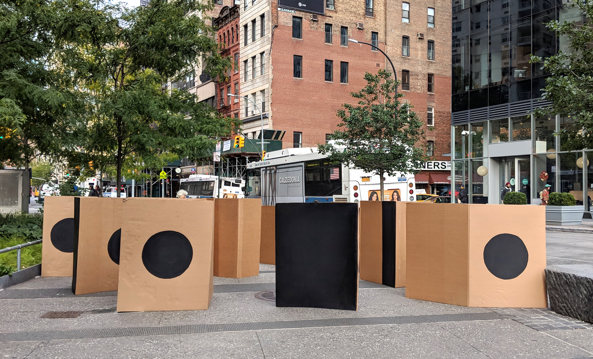
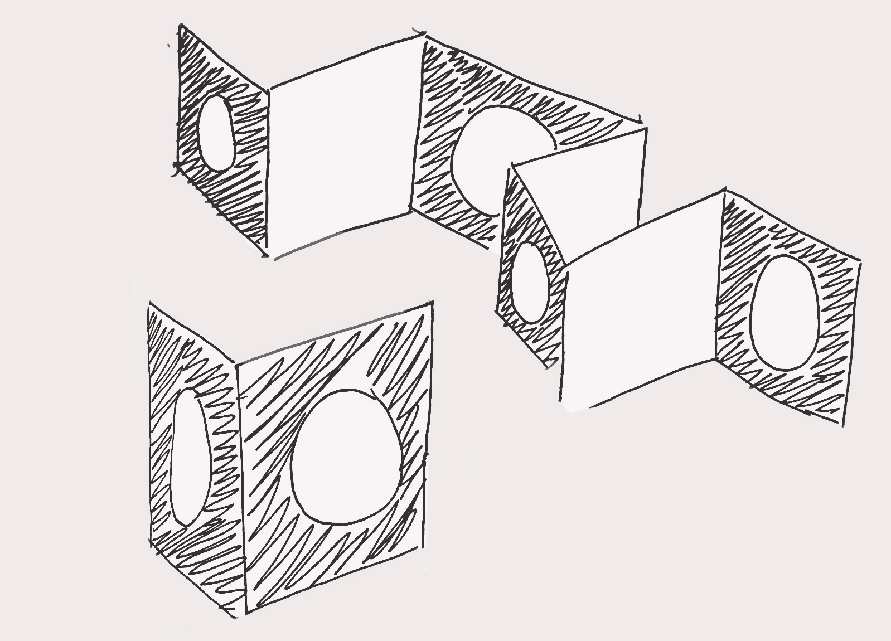
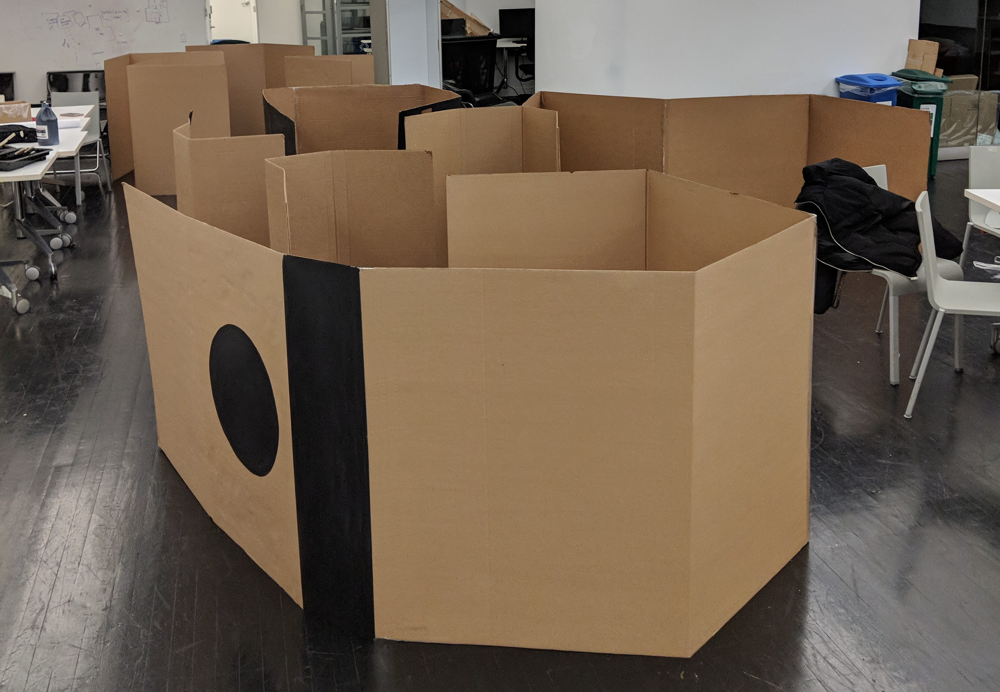

Interruption is a collection of temporary cardboard barriers created to observe how busy NYC commuters would interact with obstacles. Annoying and meddlesome, the barriers transformed the commuter hub into a place of inconvenience.

Irritance, inconvenience, and interruptions are a commuter's worst enemy. Commuting is a time sensitive action, especially in NYC where public transportation has the potential to be better than its current state. I wanted to play with this concept and observe how a change in flow would impact the commuters' paths, attitudes, and reactions.

The use of a material that not only looks flimsy but is also weak in construction would create a different reaction than professional and more permanent barriers. The relationship between the material's appearance and interaction was something I wanted to observe, as well as the interaction with the form itself.

Most commuters were neither excited nor happy to see this installation in their path. Individuals either went out of their way to avoid it or found the easiest route through the barriers; others behind them followed their path. My main observation was how people are respectful of borders, despite its appearance. This project was not only insightful, but also fun and humorous to create and execute.